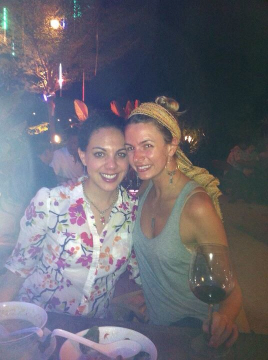

Quinoa- and Vegetable-stuffed Bells Peppers
One Night In Bangkok
After a week of freezing (LITerally freezing) cold weather, I was delighted to get off the plane in Thailand in 90 degree heat... that is until I realized I was still outfitted for 20. Always the pre-planner, I swapped my boots for my Rainbows and my jeans for shorts and we were ready to go. Sadly I was already, yet again, drenched in my own sweat as I paced around the airport trying to figure out what in the world I was doing and where in the world I was going.
Within moments I had a message from Stephanie, my dear friend and dinner date (along with Cari!) for the evening. She had been in Thailand for 18 days and prior to her leaving, actually months ago, we planned to meet up if it all worked out. The stars aligned and, yay!, it all worked out. We landed within an hour of each other and headed directly to the hotel to enjoy some chilled wine and spicy curry. We swapped stories about our trips, mine just beginning and hers coming to a close, and then hunkered down for the night.
Thanks for the amazing evening and place to stay, ladies! And thanks for the downtown hotel rec... more on that to come after I'm leaving (I'm not trying to have weirdos following me around, hey now. I am no fool.). Love you bunches and can't wait to see you again when I come home in March.